TensorFlow · 核心原理图谱
深度学习框架:计算图 + 自动微分,算子 kernel 按设备分发,分布式训练 + XLA 编译。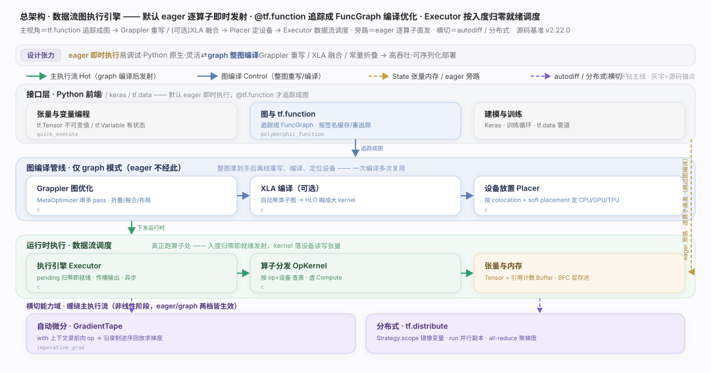
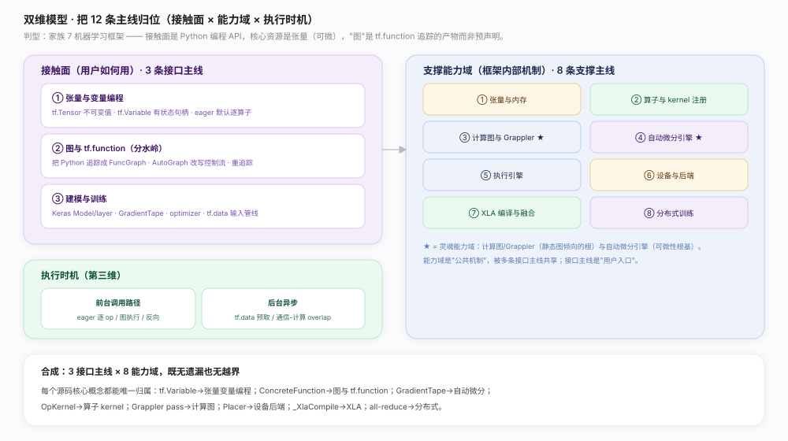
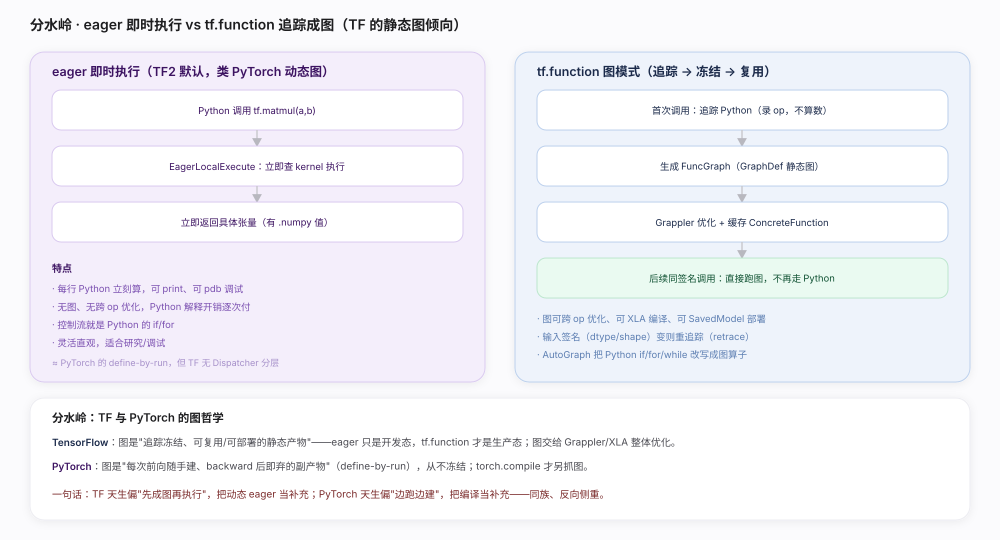
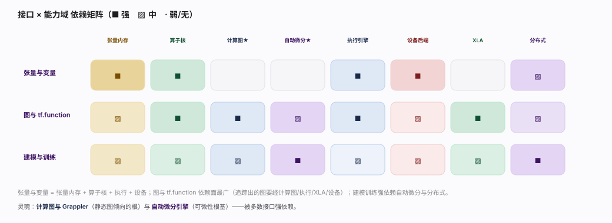
@tf.function 追踪成图后 Grappler 整体优化、跨 op 融合，通常显著提速；调试时再退回 eager。polymorphic_function.py 会在过频时告警；用 input_signature 或 reduce_retracing=True（:468）固定签名。jit_compile=True：触发 XLA 聚类编译融合，减少 kernel 启动与中间张量落地。prefetch(AUTOTUNE)（dataset_ops.py:1241）把输入预处理与训练在后台 overlap，避免 GPU 等数据。MirroredStrategy，多机用 MultiWorkerMirroredStrategy：在 strategy.scope 内建变量与模型即自动镜像 + all-reduce。Session/placeholder 变成 tf.function 追踪出的隐式图；生产/部署仍走图。resource_variable_ops.py:377 BaseResourceVariable），读它才产出张量；它能跨调用持久、可被 assign 原地更新，张量则不可变。tf.Variable，但常量张量需显式 tape.watch；watch_accessed_variables=False（backprop.py:763）可关掉自动追踪。| 维度 | TensorFlow | PyTorch |
|---|---|---|
| 默认执行 | eager（TF2 起）但 tf.function 是生产态 | eager（define-by-run）为唯一主路 |
| 图哲学 | 追踪冻结的静态图，可复用/部署 | 每次前向随手建、backward 后即弃的副产物 |
| 算子分发 | 按 op 名 + 设备查 kernel 注册表（单层查表） | Dispatcher 按 DispatchKeySet 分层分发 |
| 自动微分 | GradientTape 显式 with 上下文录 op | requires_grad 隐式随算子经 Autograd 层建反向图 |
| 图级优化 | Grappler（整图 pass）+ XLA | torch.compile（Dynamo 抓图 + Inductor） |
| 控制流 | AutoGraph 把 Python if/for 改写成图算子 | 直接用 Python 控制流（编译时才特殊处理） |
| 类 | 主线 | 关键机制 | 源码锚点 |
|---|---|---|---|
| 接口 | 张量与变量编程 | tf.Tensor / tf.Variable / eager | tensorflow/python/framework/tensor.py:139、resource_variable_ops.py:377 |
| 接口 | 图与 tf.function | 追踪成 FuncGraph / AutoGraph | polymorphic_function.py:453、tracing_compilation.py:310 |
| 接口 | 建模与训练 | GradientTape / tf.data | backprop.py:705、dataset_ops.py:137 |
| 支撑 | 张量与内存 | Tensor + RefCounted TensorBuffer | tensorflow/core/framework/tensor.h:72 |
| 支撑 | 算子与 kernel | REGISTER_OP / REGISTER_KERNEL_BUILDER | op.h:318、op_kernel.h:1500、op_kernel.cc:1334 |
| 支撑 | 计算图与 Grappler | GraphDef / MetaOptimizer | core/graph/graph.h、grappler/optimizers/meta_optimizer.cc:232 |
| 支撑 | 自动微分引擎 | GradientTape / ComputeGradient | tensorflow/c/eager/tape.h:136、:183 |
| 支撑 | 执行引擎 | Executor 数据流 / EagerLocalExecute | common_runtime/executor.cc:283、eager/execute.cc:1734 |
| 支撑 | 设备与后端 | Placer / ColocationGraph | common_runtime/placer.cc:223、colocation_graph.cc |
| 支撑 | XLA 编译与融合 | 自动聚类 / XlaCompiler | compiler/jit/mark_for_compilation_pass.cc:95、tf2xla/xla_compiler.cc |
| 支撑 | 分布式训练 | Strategy / collective all-reduce | python/distribute/distribute_lib.py:2026、collective_all_reduce_strategy.py:57 |
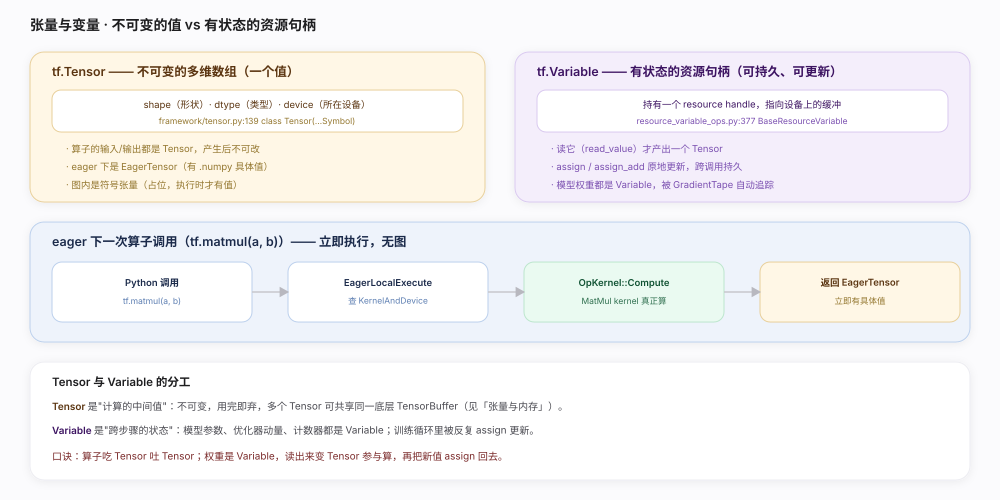
tf.Tensor（不可变的值）和 tf.Variable（有状态的资源句柄）搭起一切计算。eager 模式下每个算子立即执行。核实基准：官方源码（tensorflow/python/framework/tensor.py:139、tensorflow/python/ops/resource_variable_ops.py:377）。@tf.function：eager 逐算子付 Python 开销，追踪成图后由 Grappler/XLA 整体优化。tf.Variable：只有 Variable 能被 optimizer 更新、被 GradientTape 默认追踪、被 checkpoint 保存。.numpy、Python 侧循环里逐元素操作会打断加速；尽量用向量化的 tf 算子。mixed_float16 策略，显存降、吞吐升，主权重仍保留 float32。tf.constant 产出不可变 Tensor（会被折叠进图），Variable 是可更新的持久状态，二者角色相反。| 维度 | tf.Tensor | tf.Variable |
|---|---|---|
| 本质 | 不可变的值（一次计算的结果） | 有状态的资源句柄（指向设备缓冲） |
| 可变性 | 不可改 | assign / assign_add 原地更新 |
| 生命周期 | 用完即弃（可与他 Tensor 共享 buffer） | 跨调用持久 |
| 求值 | 本身就是值 | 读它才产出 Tensor |
| 典型用途 | 算子的输入输出、中间激活 | 模型权重、动量、计数器 |
| 自动微分 | 需 tape.watch 才被追踪 | 被 GradientTape 默认追踪 |
| 源码 | framework/tensor.py:139 | resource_variable_ops.py:377 |
| 操作 | 底层 op | 源码锚点 |
|---|---|---|
| 读当前值 | ReadVariableOp | resource_variable_ops.py:653（value）、:871（read_value）、:815（_read_variable_op） |
| 覆写 | AssignVariableOp | resource_variable_ops.py:1063 |
| 累加 | AssignAddVariableOp | resource_variable_ops.py:1028 |
| 累减 | AssignSubVariableOp | resource_variable_ops.py:1000 |
| 签名描述 | TensorSpec（dtype+shape，无值） | tensor.py:1069 |
| 关注点 | 说明 |
|---|---|
| dtype | float32 默认；混合精度用 float16/bfloat16 + float32 主权重（Grappler 有 auto_mixed_precision pass） |
| 设备放置 | eager 下张量创建在当前默认设备；with tf.device('/GPU:0') 显式指定 |
| 跨设备 | 算子输入若在不同设备，运行时自动插 send/recv 拷贝（见「设备与后端」） |
| numpy 互操作 | EagerTensor 与 np.ndarray 零拷贝或浅拷贝互转（CPU 上） |
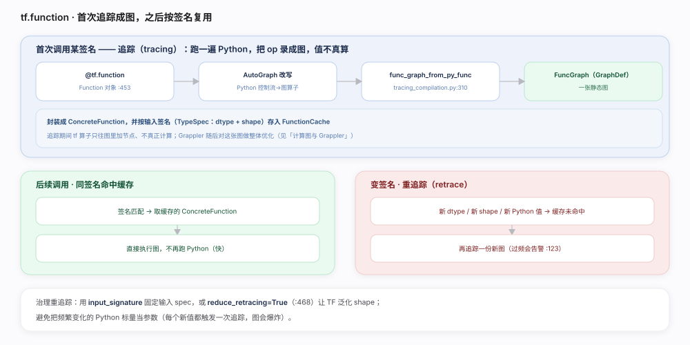
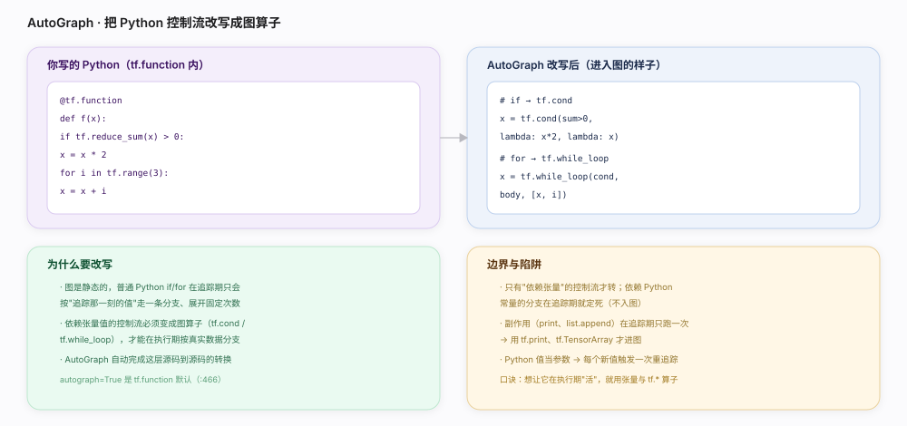
tf.function 把 Python 函数追踪成一张可复用、可优化、可部署的静态图（FuncGraph / GraphDef），AutoGraph 负责把 Python 控制流改写成图算子。核实基准：官方源码（tensorflow/python/eager/polymorphic_function/polymorphic_function.py:453、tracing_compilation.py:310）。input_signature 固定签名：一次追踪、长期复用，杜绝重追踪。jit_compile=True：让追踪出的图进一步走 XLA 融合。print、全局计数器只在追踪那一次执行；要运行期生效用 tf 版算子。| 维度 | eager（默认） | tf.function（图） |
|---|---|---|
| 何时算 | 每行 Python 立即算 | 首次追踪成图，之后跑图 |
| 有无图 | 无 | 有 FuncGraph（GraphDef） |
| 跨 op 优化 | 无 | Grappler 整图重写 + XLA 可选 |
| 控制流 | Python 原生 if/for | AutoGraph 改写成 tf.cond/tf.while_loop |
| 调试 | 可 print/pdb | 追踪期只跑一次 Python |
| 部署 | 不能直接导出 | 可存 SavedModel、可 serving |
| 定位 | 开发/研究态 | 生产/性能态 |
| 机制 | 说明 | 源码锚点 |
|---|---|---|
| Function 对象 | 管理多份 ConcreteFunction（多态） | polymorphic_function.py:453 |
| 追踪调度 | 查缓存 / 未命中才追踪 | tracing_compilation.py:144、:188 |
| 追踪入口 | 生成 FuncGraph | tracing_compilation.py:310 func_graph_from_py_func |
| 签名缓存 | 按 TypeSpec 缓存 ConcreteFunction | tracing_compilation.py:87 FunctionCache |
| 重追踪检测 | 过频追踪计数并 warn | polymorphic_function.py:171、:205、:846 |
| 泛化 shape | 减少重追踪 | reduce_retracing（polymorphic_function.py:468） |
| 控制流转换 | AutoGraph | autograph=True（polymorphic_function.py:466） |
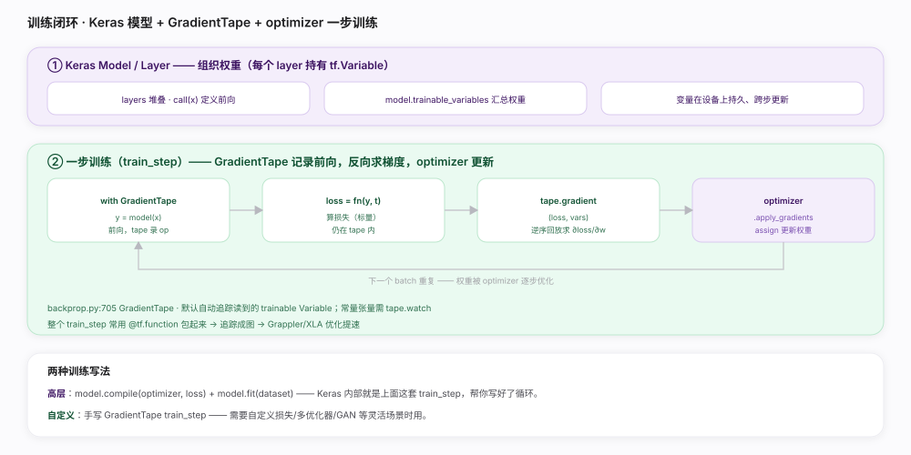
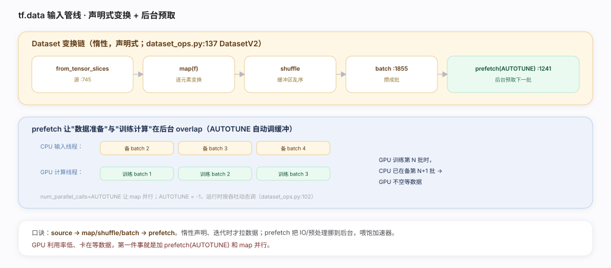
Model/Layer 组织权重、GradientTape 求梯度、optimizer 更新、tf.data 喂数据，串成训练闭环。核实基准：官方源码（tensorflow/python/eager/backprop.py:705、tensorflow/python/data/ops/dataset_ops.py:137）。prefetch(AUTOTUNE) 和 map(num_parallel_calls=AUTOTUNE)：GPU 利用率低、卡等数据时的第一优化。@tf.function：追踪成图后 Grappler/XLA 优化，比 eager 循环快得多。persistent=True（backprop.py:509 make_vjp 相关）会保留中间量、占更多内存，用完 del tape。tf.Variable；常量张量要 tape.watch，或用 watch_accessed_variables=False（backprop.py:763）关闭自动追踪再手动 watch。gradient 调一次后资源即释放；要多次求梯度需 persistent=True。minimize 才把两步合一。| 部件 | 职责 | 源码/说明 |
|---|---|---|
| Keras Model/Layer | 组织权重与前向 | layer 持有 tf.Variable；model.fit 内置训练循环 |
| GradientTape | 录 op、求梯度 | backprop.py:705、:960；默认追踪读到的 trainable Variable |
| optimizer | 用梯度更新权重 | optimizer.py:242；apply_gradients（:656）→ _apply_dense（:1089）→ assign Variable |
| tf.data.Dataset | 输入管线 | dataset_ops.py:137；map（:2164）/batch（:1855）/prefetch（:1241）惰性链 |
| loss / metrics | 目标与评估 | 标量损失驱动反向；metric 累积状态 |
| 写法 | 适用 | 特点 |
|---|---|---|
| 高层 model.compile + model.fit | 标准监督训练 | Keras 内部就是 GradientTape train_step，省心 |
| 自定义 GradientTape 循环 | GAN / 多优化器 / 自定义损失 | 完全掌控前向、梯度、更新时机 |
| 分布式 strategy.run | 多卡/多机 | 在 strategy.scope 内建模型，run 并行副本（见「分布式训练」） |
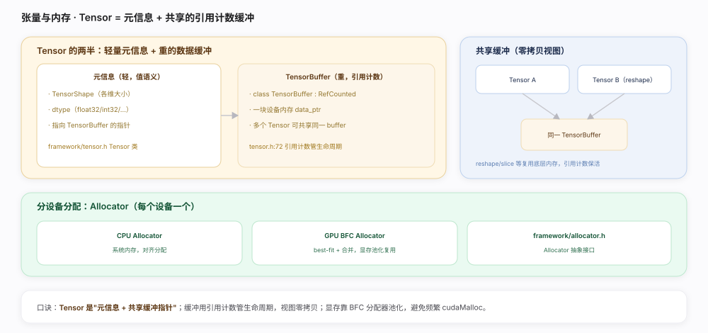
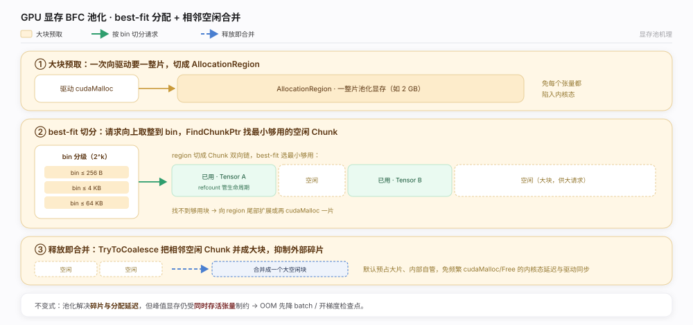
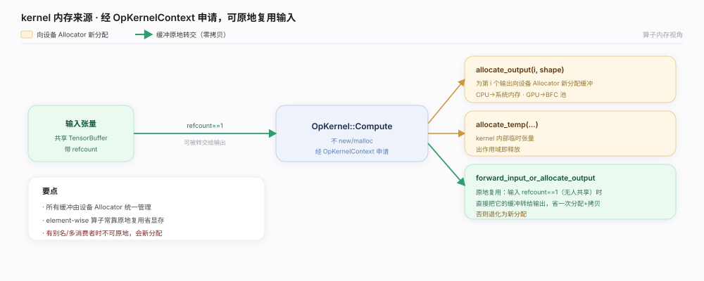
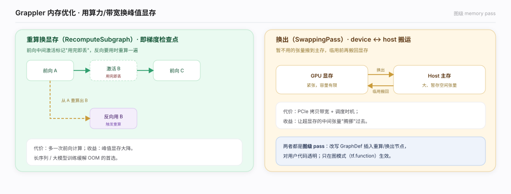
tensorflow/core/framework/tensor.h:72、tensorflow/core/framework/tensor.h:119、tensorflow/core/framework/allocator.h:38）。RecomputeSubgraph 重算换显存）。forward_input_or_allocate_output 复用输入缓冲。TF_GPU_ALLOCATOR / 显存增长：set_memory_growth 按需增长而非一次占满，多进程共享 GPU 时有用。OpKernelContext 的 allocate_* 接口，由设备 Allocator 统一管理。| 机制 | 说明 | 依据 |
|---|---|---|
| 引用计数缓冲 | TensorBuffer : RefCounted，多 Tensor 共享 | tensor.h:72 |
| 元信息/缓冲分离 | 值语义元信息 + RefCountPtr 指向缓冲 | tensor.h:119、:180 |
| 零拷贝视图 | reshape/slice/shaped 复用底层缓冲 | tensor.h:523 |
| 分设备 Allocator | CPU/GPU 各一，接口统一 | allocator.h:38、xla/tsl/.../allocator.h:159 |
| BFC 显存池 | best-fit + 合并，池化复用 | bfc_allocator.h:95、:608、:705 |
| kernel 原地复用 | 输入引用计数为 1 时转给输出 | op_kernel.h:914 |
| Grappler 内存优化 | 重算/换出省显存 | memory_optimizer.cc:431、:1207 |
| 关联 | 关系 |
|---|---|
| 算子与 kernel | kernel 从 OpKernelContext::allocate_output 申请输出缓冲（op_kernel.h:1002） |
| 设备与后端 | 张量所在设备决定用哪个 Allocator；跨设备靠 Send/Recv 拷贝 |
| XLA | 融合后中间张量不落显存，直接留在寄存器/共享内存 |
| 执行引擎 | Executor 管张量在节点间的传递与生命周期（引用计数驱动释放） |
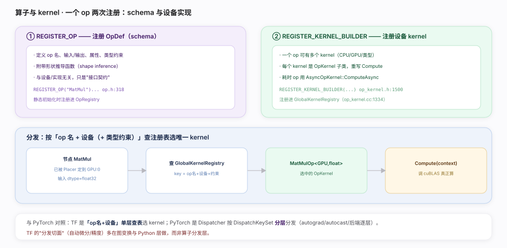
REGISTER_OP 注册接口契约（OpDef schema），REGISTER_KERNEL_BUILDER 注册各设备的具体实现（OpKernel）。运行时按「op 名 + 设备」查全局注册表选唯一 kernel。核实基准：官方源码（tensorflow/core/framework/op.h:318、op_kernel.h:1500、op_kernel.cc:1334）。FindKernelRegistration 未命中 GPU 项。FindKernelRegistration 失败报错。| 概念 | 说明 | 源码锚点 |
|---|---|---|
| OpDef（schema） | op 的接口契约，与实现无关 | op.h:318、op.h:224 |
| 形状推导 | SetShapeFn 挂载，构建期推 shape | op.h:278 |
| OpKernel | 基类，重写 Compute | op_kernel.h:107、:158 |
| OpKernelConstruction | 构造期读 attr | op_kernel.h:258 |
| AsyncOpKernel | 异步 op（如 Recv、队列） | op_kernel.h:231、:251 |
| OpKernelContext | 入参/出参、分配器、设备 | op_kernel.h:572 |
| kernel 注册 | 进全局注册表 | op_kernel.h:1500、op_kernel.cc:1334、:1343 |
| kernel 查找 | 按 op+设备+约束查表 | op_kernel.cc:1447、:1549 |
| kernel 实例化 | 命中后 new 出 kernel | op_kernel.h:1405 |
| 维度 | TensorFlow | PyTorch |
|---|---|---|
| 选 kernel | op 名 + 设备 + 约束，单层查表 | DispatchKeySet 分层分发 |
| autograd | 图/Python 层 + GradientTape 记录 | Autograd 分发键（每算子一层） |
| 混合精度 | Grappler auto_mixed_precision pass | Autocast 分发键 |
| 扩展新算子 | REGISTER_OP + REGISTER_KERNEL_BUILDER | 注册 kernel 到 Dispatcher |
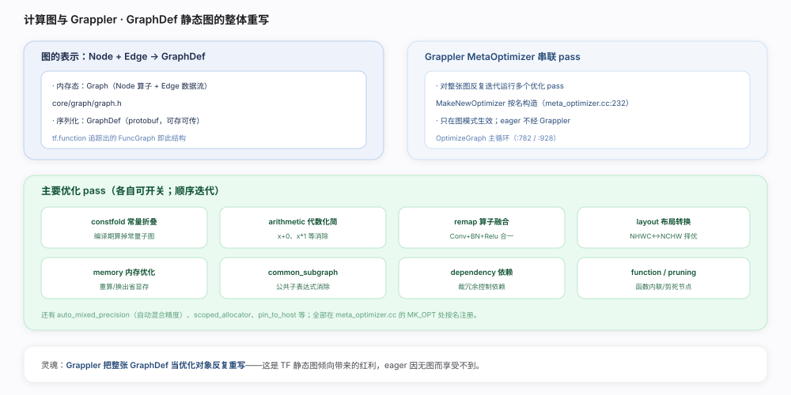
tensorflow/core/graph/graph.h:85、tensorflow/core/grappler/optimizers/meta_optimizer.cc:232）。remapper.cc 的融合模式。meta_optimizer.cc:255 对应 pass）自动插 cast，float16 计算 + float32 累加。NumIterations）。meta_optimizer.cc:841），前一 pass 的产物触发后续优化。| pass 名 | 作用 | 源码锚点 |
|---|---|---|
| MakeNewOptimizer | 按名构造 pass | meta_optimizer.cc:232、:215 |
| 多轮迭代主循环 | 反复跑到收敛/上限 | meta_optimizer.cc:782、:841、:949 |
| constfold | 常量折叠 | meta_optimizer.cc:242 |
| arithmetic | 代数化简 | meta_optimizer.cc:274 |
| remap | 算子融合 | meta_optimizer.cc:248（remapper.cc） |
| layout | 数据布局转换 | meta_optimizer.cc:251（generic_layout_optimizer.cc） |
| memory | 内存优化（重算/换出） | meta_optimizer.cc:270 |
| common_subgraph_elimination | 公共子表达式消除 | meta_optimizer.cc:272 |
| dependency | 控制依赖裁剪 | meta_optimizer.cc:280 |
| function | 函数内联 | meta_optimizer.cc:239 |
| auto_mixed_precision | 自动混合精度 | meta_optimizer.cc:255 |
| 维度 | 说明 |
|---|---|
| Grappler vs XLA | Grappler 是图级 pass 重写（仍是 TF 图）；XLA 进一步把子图编译成融合的 HLO（换执行栈） |
| 顺序 | 通常 Grappler 先整体优化，XLA 再对可编译簇编译 |
| vs PyTorch | PyTorch eager 无此层；torch.compile 的 Inductor 才做类似图级融合 |
| 触发 | 图模式（tf.function/SavedModel）自动跑；eager 不跑 |
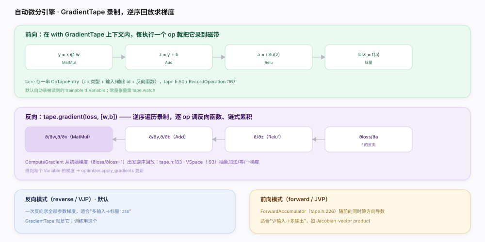
GradientTape 上下文内执行 op 时把操作录到磁带，gradient 沿录制逆序回放、逐 op 调反向函数、链式累积梯度。核实基准：官方源码（tensorflow/c/eager/tape.h:136、:183、tensorflow/python/eager/backprop.py:705）。stop_recording 暂停。persistent=True 仅在需多次 gradient 时用：会保留中间量，用完 del tape 及时释放。tape.watch：只有被 watch 或 trainable Variable 才有梯度。| 机制 | 说明 | 源码锚点 |
|---|---|---|
| 磁带记录 | RecordOperation 追加 OpTapeEntry | tape.h:167、:423、:50 |
| 种子梯度 | ∂loss/∂loss=1 初始化 | tape.h:614 |
| 反向回放 | ComputeGradient 逆序遍历累积 | tape.h:183 |
| 梯度空间抽象 | VSpace（加/零/一梯度） | tape.h:93 |
| 前向模式 | ForwardAccumulator（JVP） | tape.h:238 |
| 反向函数查表 | 按 op 名取梯度函数 | backprop.py:118 |
| Python 入口 | GradientTape / gradient / watch | backprop.py:705、:960、:864 |
| 录制开关 | 进出上下文 / 暂停 | backprop.py:831、:887、:763 |
| VJP / Jacobian | make_vjp / jacobian | backprop.py:509、:1085 |
| 维度 | TensorFlow GradientTape | PyTorch autograd |
|---|---|---|
| 记录方式 | 显式 with tape 上下文录 op | 隐式：requires_grad 张量经算子自动建反向图 |
| 触发范围 | 只录磁带上下文内的 op | 全程只要 requires_grad 就记 |
| 反向 | tape.gradient 逆序回放录制 | loss.backward 遍历动态反向图 |
| 变量追踪 | 默认追 Variable，常量需 watch | 叶子张量 requires_grad=True |
| 相同点 | 都是 define-by-run 式动态求导 | 都随前向记录、反向逆序 |
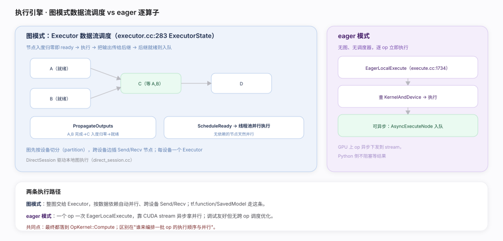
Executor 按数据流调度节点（就绪即执行、并行无依赖节点）；eager 模式下逐算子直接下发。核实基准：官方源码（tensorflow/core/common_runtime/executor.cc:283、tensorflow/core/common_runtime/propagator_state.cc:76、tensorflow/core/common_runtime/eager/execute.cc:1734）。ProcessSync 内联，避免调度开销盖过算子本身。| 机制 | 说明 | 源码锚点 |
|---|---|---|
| ExecutorState/Impl | 数据流调度状态机 | executor.cc:283、:148 |
| pending count | 入度归零即 ready | pending_counts.h:50 |
| RunAsync | 从根节点启动执行 | executor.cc:494 |
| NodeDone → 传播 | 唤醒后继、递减 pending | executor.cc:1189、propagator_state.cc:76、:108 |
| ScheduleReady | 就绪节点丢线程池并行 | executor.cc:1268 |
| 代价模型 | 廉价内联 / 昂贵入池 | executor.cc:185、:307、:310 |
| 图切分 | 按设备 partition + Send/Recv | 跨设备通信 |
| eager 顶层分派 | EagerExecute → LocalExecute | eager/execute.cc:2261、:1734 |
| kernel 缓存 | 按签名查/建 KernelAndDevice | eager/execute.cc:1264 |
| 异步节点 | AsyncExecuteNode 入队 | eager/execute.cc:1649、:1688 |
| 维度 | 图模式（Executor） | eager 模式 |
|---|---|---|
| 编排者 | Executor 数据流调度 | 无，逐 op 下发 |
| 并行 | 无依赖节点线程池并行 | 靠 CUDA stream 异步 |
| 跨设备 | Send/Recv 节点 | 逐 op 拷贝 |
| 优化 | 配合 Grappler/XLA | 无跨 op 优化 |
| 用于 | tf.function / SavedModel | 开发调试 |
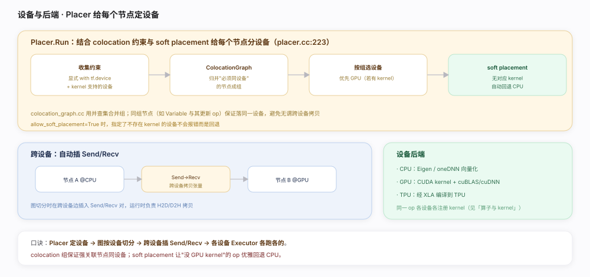
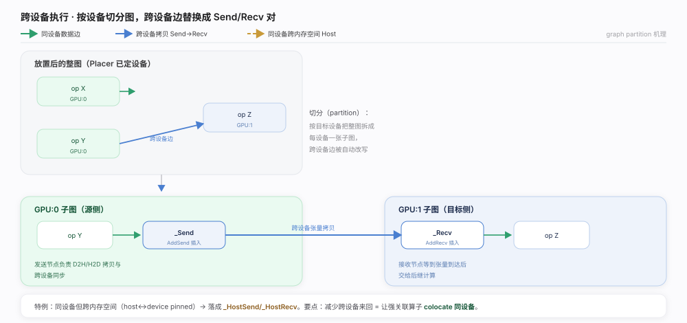
Placer 结合 colocation 约束与 soft placement 给每个节点定 CPU/GPU/TPU；图按设备切分、跨设备边自动插 Send/Recv 拷贝张量。核实基准：官方源码（tensorflow/core/common_runtime/placer.cc:223、tensorflow/core/common_runtime/colocation_graph.cc:660、tensorflow/core/graph/graph_partition.cc:185）。ColocateAllNodes），自定义放置时别拆散。log_device_placement 排查回退：发现关键 op 落 CPU（缺 GPU kernel），针对性换算子或补 kernel。| 机制 | 说明 | 源码锚点 |
|---|---|---|
| Placer::Run | 放置主流程（四步） | placer.cc:223 |
| 并查集归组 | Member::FindRoot 路径压缩 | colocation_graph.cc:387 |
| ColocateAllNodes | 依 colocation 属性合并组 | colocation_graph.cc:660、:729 |
| 可行设备交集 | 每组成员支持设备取交 | colocation_graph.cc:561、.h:255 |
| soft placement | 无 kernel 自动回退 CPU | colocation_graph.cc:396 |
| 设备分配日志 | log_device_placement 打印 | placer.cc:164 |
| Send/Recv | 跨设备拷贝节点对 | graph_partition.cc:185、:243 |
| Host Send/Recv | 同设备跨内存空间 | graph_partition.cc:127、:230、:289 |
| 配置 | 作用 |
|---|---|
| with tf.device('/GPU:0') | 显式指定节点/张量设备 |
| allow_soft_placement | 无对应 kernel 时回退而非报错 |
| log_device_placement | 打印每个节点最终落的设备（调试） |
| memory growth | GPU 显存按需增长而非一次占满 |
| CUDA_VISIBLE_DEVICES | 限定进程可见的 GPU |
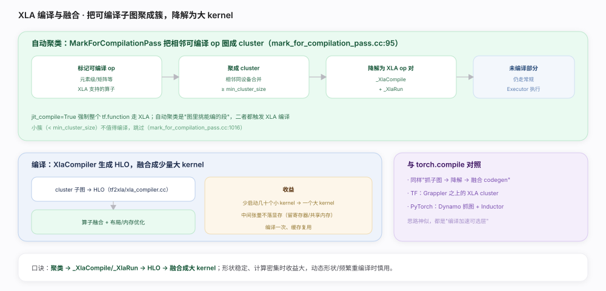
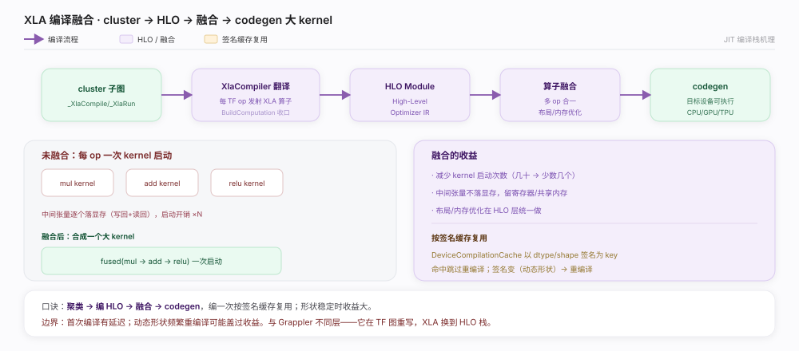
_XlaCompile/_XlaRun、经 XlaCompiler 编译成 HLO 并融合成少量大 kernel，减少 kernel 启动与中间张量落地。核实基准：官方源码（tensorflow/compiler/jit/mark_for_compilation_pass.cc:95、tensorflow/compiler/jit/build_xla_ops_pass.cc:470、tensorflow/compiler/tf2xla/xla_compiler.cc:818）。_XlaCompile/_XlaRun，XlaCompiler 编成 HLO 并融合成少量大 kernel、按签名缓存——减少 kernel 启动与中间张量落地，形状稳定时收益大，与 torch.compile 思路神似。jit_compile=True：融合收益最大；动态形状会频繁触发 DeviceCompilationCache miss 而重编译，慎用。min_cluster_size 门槛聚不成有效 cluster。TryToContractEdge 收进 cluster，不支持的仍走常规执行 fallback。| 机制 | 说明 | 源码锚点 |
|---|---|---|
| 自动聚类主体 | 五步聚类 | mark_for_compilation_pass.cc:95、:277 |
| 边收缩 | 相邻可编译簇合并 | mark_for_compilation_pass.cc:298、:322 |
| min_cluster_size | 太小的簇跳过 | mark_for_compilation_pass.cc:1032 |
| 降解 | _XlaCompile / _XlaRun 对 | build_xla_ops_pass.cc:470、:499、:519 |
| fallback | 未编译部分走常规执行 | 注释 mark_for_compilation_pass.cc:80 |
| 编译 | 子图 → HLO Module | xla_compiler.cc:818、:1521、:209 |
| 编译缓存 | 按签名缓存可执行 | device_compilation_cache.h:69 |
| 融合 | 多 op 合成大 kernel | HLO 优化 |
| 强制编译 | jit_compile=True | tf.function 参数 |
| 维度 | 说明 |
|---|---|
| Grappler | TF 图上的 pass 重写，产物仍是 TF 图 |
| XLA | 把子图编译成融合 HLO，换执行栈（更激进） |
| 顺序 | Grappler 先整体优化，XLA 再对可编译簇编译 |
| torch.compile | Dynamo 抓图 + Inductor 融合，思路与 XLA 神似 |
| 定位 | 都是"编译加速可选层"，不改用户写法 |
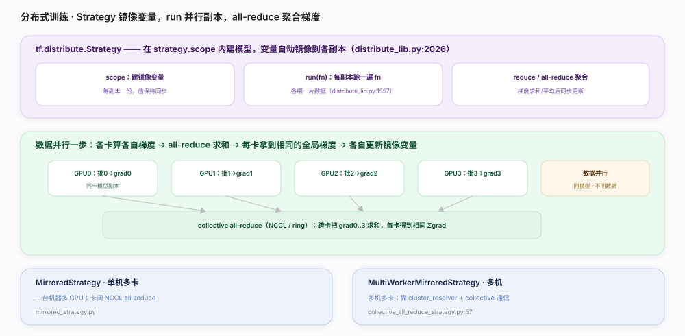
tf.distribute.Strategy 在 scope 内镜像变量、run(fn) 并行副本、collective all-reduce 聚合梯度，用户几乎不改模型代码。核实基准：官方源码（tensorflow/python/distribute/distribute_lib.py:2026、tensorflow/python/distribute/collective_all_reduce_strategy.py:57、tensorflow/python/distribute/cross_device_ops.py:960）。strategy.scope 内建模型和优化器：否则变量不会被拦截镜像，分布式失效。NcclAllReduce；无 NCCL 或异构时才退 ReductionToOneDevice。| 机制 | 说明 | 源码锚点 |
|---|---|---|
| Strategy | 分布式入口 / 基类 | distribute_lib.py:2026、:1088 |
| scope | 建镜像变量 | distribute_lib.py:1223 |
| run | 每副本跑 fn | distribute_lib.py:1557 |
| 数据分片 | 分发 dataset 到副本 | distribute_lib.py:1349 |
| reduce / gather | 跨副本聚合 | distribute_lib.py:1675、:2368、:2109 |
| reduce_to | 归约分派到实现 | distribute_lib.py:2667 |
| ReplicaContext | 副本内通信入口 | distribute_lib.py:3670、:3546、:3445 |
| NcclAllReduce | NCCL ring/tree 归约 | cross_device_ops.py:960、:834 |
| CollectiveAllReduce | 多机集合通信 | cross_device_ops.py:1045 |
| Mirrored/多机策略 | 单机多卡 / 跨机 | mirrored_strategy.py:200、collective_all_reduce_strategy.py:57 |
| 策略 | 场景 | 通信 |
|---|---|---|
| MirroredStrategy | 单机多 GPU | 卡间 NCCL all-reduce |
| MultiWorkerMirrored | 多机多卡（同步） | collective（跨机 all-reduce） |
| ParameterServerStrategy | 大规模异步 | 参数服务器 push/pull |
| TPUStrategy | TPU pod | XLA + 跨核 collective |